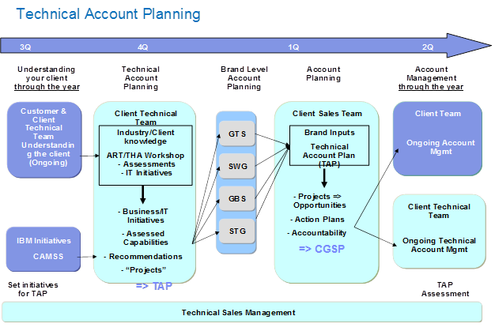

Work Product (Artifact): Technical Account Plan
(ART 0742)
A Technical Account Plan is a documented strategic plan to address our customer business needs/challenges by leveraging IBM architectures and solutions.
Purpose
The technical account plan is a key part of the overall account plan. It aligns IBM capabilities in technology and
solutions to the Client’s business and technology objectives to provide an overall plan for how these IBM capabilities can
deliver Client Value.
The Technical Account Plan is a documented strategy/blueprint for an account that all brand architects and technical
specialists associated with the account provide input on, and lead follow-up actions as appropriate.
It is a document that enables year long, cross brand teaming and collaboration => Technical Account Management.
Therefore It should not be a stand-alone document that is used once a year, but rather a living document that is
updated throughout the year based on how the customer has progressed to the plan.
In this manner, the Technical Account Plan is a current record of the Technical Account Plan process that is depicted
in Figure 1.
Note how this process and the Technical Account Plan work product are complementary to the overall planning that the
IBM team does to provide coherent Client Value. The Technical Account Plan must have input from the different areas of
IBM that bring value to the Client, led by the Technical Sales Leader for this client, often termed a Client Technical
Architect. Depending on the nature of the IBM relationship, other Technical Leaders may be asked to lead the process,
for example in the case when the Client primarily views IBM solely as an Outsourcing service provider.

Figure 1: Technical Account Plan Process
Brief Outline
A Technical Account Plan consists of seven sections:
Enterprise Background. This provides background about the client to those new to the account team.
This includes the new specialist as well as the visiting executive. For those with background knowledge, it is a
refresh of the corporate strategy and the organization.
Enterprise Objectives. An overview of key business enterprise objectives, imperatives, initiatives
as reported both publicly and those for which the IBM client team has specific insight
Enterprise IT Objectives. This includes the client IT stated strategic goals & objectives and
can also contain key initiatives, budgets, challenges, selected IBM technology points of view for this client.
Technical Account Overview. The technical landscape for the client’s enterprise technology and IT
solutions, including a view of IBM and competitive presence.
IBM Gap Analysis Summary. Most typically this is the result of an ART/THA workshop with the client
team to assess current and target state of IT capabilities and determine gaps and a roadmap. For specific domains,
other techniques may apply.
IBM Projects, Strategy and Plans. The identification of a set of projects that are aligned with
client business/IT initiatives, their capabilities (and gaps) and with applicable IBM Strategic Growth initiatives
such as CAMSS Growth Initiatives.
IBM Technical Relationship Map. A list of key stakeholders, influencers and decision makers (with
their individual perspective of IBM technology and solutions) together with the IBM technical team members who have
relationships with the individuals at the client.
The Technical Account Plan is typically done early in the year and updated as new client initiatives and business
imperatives emerge. It should dovetail with the overall account plan, but have the technical depth on relevant
capabilities.
The Technical Account Plan should be consulted as critical context information by IBM sellers and technical sales
leaders working on a new opportunity for the Client.
Tailoring
Impact of not having
In the absence of a Technical Account Plan, the Solution Design for each Opportunity will be done individually with no
connecting theme, other than oral instruction from the client team.
The consequence from this lack of context is uncoordinated, opportunistic behavior which inhibits the full Client
Value that the IBM team can deliver in the context of
Reasons for not needing
Where the IBM team is serving a new client, with no Technical Sales Leader assigned, and IBM has decided to be
opportunistic given the client buying behavior, there may be less need for a full Technical Account Plan but it should
still be outlined, with the objective that it can be enhanced as more trusted relationships and insight in Client business
needs emerge.